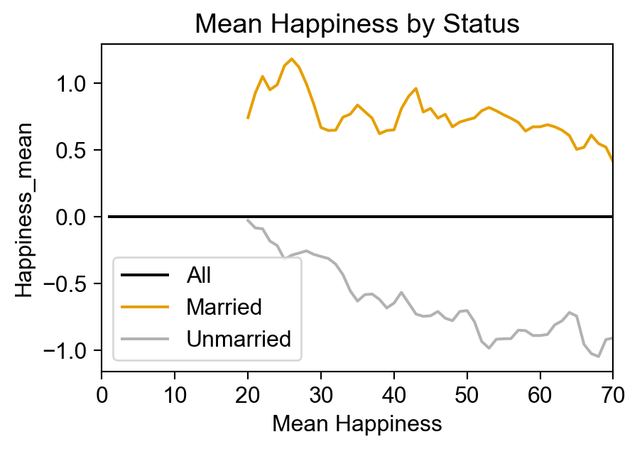
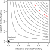
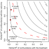
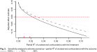

(DC minimum marriage age = 18)

DSAN 5650: Causal Inference for Computational Social Science
Summer 2025, Georgetown University
Today’s Planned Schedule:
| Start | End | Topic | |
|---|---|---|---|
| Lecture | 6:30pm | 6:45pm | Final Projects → |
| 6:45pm | 7:10pm | Included Variable Bias → | |
| 7:10pm | 8:00pm | Heterogeneous Treatment Effects → | |
| Break! | 8:00pm | 8:10pm | |
| 8:10pm | 9:00pm | Causal Forests → |
\[ \DeclareMathOperator*{\argmax}{argmax} \DeclareMathOperator*{\argmin}{argmin} \newcommand{\bigexp}[1]{\exp\mkern-4mu\left[ #1 \right]} \newcommand{\bigexpect}[1]{\mathbb{E}\mkern-4mu \left[ #1 \right]} \newcommand{\definedas}{\overset{\small\text{def}}{=}} \newcommand{\definedalign}{\overset{\phantom{\text{defn}}}{=}} \newcommand{\eqeventual}{\overset{\text{eventually}}{=}} \newcommand{\Err}{\text{Err}} \newcommand{\expect}[1]{\mathbb{E}[#1]} \newcommand{\expectsq}[1]{\mathbb{E}^2[#1]} \newcommand{\fw}[1]{\texttt{#1}} \newcommand{\given}{\mid} \newcommand{\green}[1]{\color{green}{#1}} \newcommand{\heads}{\outcome{heads}} \newcommand{\iid}{\overset{\text{\small{iid}}}{\sim}} \newcommand{\lik}{\mathcal{L}} \newcommand{\loglik}{\ell} \DeclareMathOperator*{\maximize}{maximize} \DeclareMathOperator*{\minimize}{minimize} \newcommand{\mle}{\textsf{ML}} \newcommand{\nimplies}{\;\not\!\!\!\!\implies} \newcommand{\orange}[1]{\color{orange}{#1}} \newcommand{\outcome}[1]{\textsf{#1}} \newcommand{\param}[1]{{\color{purple} #1}} \newcommand{\pgsamplespace}{\{\green{1},\green{2},\green{3},\purp{4},\purp{5},\purp{6}\}} \newcommand{\pedge}[2]{\require{enclose}\enclose{circle}{~{#1}~} \rightarrow \; \enclose{circle}{\kern.01em {#2}~\kern.01em}} \newcommand{\pnode}[1]{\require{enclose}\enclose{circle}{\kern.1em {#1} \kern.1em}} \newcommand{\ponode}[1]{\require{enclose}\enclose{box}[background=lightgray]{{#1}}} \newcommand{\pnodesp}[1]{\require{enclose}\enclose{circle}{~{#1}~}} \newcommand{\purp}[1]{\color{purple}{#1}} \newcommand{\sign}{\text{Sign}} \newcommand{\spacecap}{\; \cap \;} \newcommand{\spacewedge}{\; \wedge \;} \newcommand{\tails}{\outcome{tails}} \newcommand{\Var}[1]{\text{Var}[#1]} \newcommand{\bigVar}[1]{\text{Var}\mkern-4mu \left[ #1 \right]} \]

| Each year, 20 people are born with uniformly-distributed happiness values | |
| Each year, each person ages one year; Happiness does not change | |
| At age 18, individuals can become married; Odds of marriage each year proportional to individual's happiness; Once married, they remain married | |
| At age 70 individuals leave the sample (They move to Boca Raton, Florida) |
import pandas as pd
import numpy as np
rng = np.random.default_rng(seed=5650)
import matplotlib.pyplot as plt
import seaborn as sns
cb_palette = ['#e69f00','#56b4e9','#009e73']
sns.set_palette(cb_palette)
import patchworklib as pw
from scipy.special import expit
# The original R code:
# sim_happiness <- function( seed=1977 , N_years=1000 , max_age=65 , N_births=20 , aom=18 ) {
# set.seed(seed)
# H <- M <- A <- c()
# for ( t in 1:N_years ) {
# A <- A + 1 # age existing individuals
# A <- c( A , rep(1,N_births) ) # newborns
# H <- c( H , seq(from=-2,to=2,length.out=N_births) ) # sim happiness trait - never changes
# M <- c( M , rep(0,N_births) ) # not yet married
# # for each person over 17, chance get married
# for ( i in 1:length(A) ) {
# if ( A[i] >= aom & M[i]==0 ) {
# M[i] <- rbern(1,inv_logit(H[i]-4))
# }
# }
# # mortality
# deaths <- which( A > max_age )
# if ( length(deaths)>0 ) {
# A <- A[ -deaths ]
# H <- H[ -deaths ]
# M <- M[ -deaths ]
# }
# }
# d <- data.frame(age=A,married=M,happiness=H)
# return(d)
# DGP: happiness -> marriage <- age
years = 70
num_births = 41
colnames = ['age','a','h','m']
sim_dfs = []
A = np.zeros(shape=(num_births,1))
H = np.linspace(-2, 2, num=num_births)
M = np.zeros(shape=(num_births,1))
def update_m(row):
if row['m'] == 0:
return int(rng.binomial(
n=1,
p=expit(row['h'] - 3.875),
size=1,
))
return 1
def sim_cohort_to(max_age):
sim_df = pd.DataFrame({
'age': [1 for _ in range(num_births)],
'h': np.linspace(-2, 2, num=num_births),
'm': [0 for _ in range(num_births)],
}
)
for t in range(2, max_age + 1):
sim_df['age'] = sim_df['age'] + 1
if t >= 18:
sim_df['m'] = sim_df.apply(update_m, axis=1)
return sim_df
all_sim_dfs = []
for cur_max_age in range(1, 71):
cur_sim_df = sim_cohort_to(cur_max_age)
all_sim_dfs.append(cur_sim_df)
full_sim_df = pd.concat(all_sim_dfs)
# full_sim_df.head()
cbg_palette = ['#c6c6c666'] + cb_palette
full_sim_df['m_label'] = full_sim_df['m'].apply(lambda x: "Unmarried" if x == 0 else "Married")
full_sim_df = full_sim_df.rename(columns={'age': 'Age', 'h': 'Happiness'})
ax = pw.Brick(figsize=(5.25,2.75));
sns.scatterplot(
x='Age', y='Happiness', hue='m_label',
data=full_sim_df,
ax=ax,
palette=cbg_palette,
s=22,
legend=True,
);
ax.move_legend("upper center", bbox_to_anchor=(0.5, 1.15), ncol=2);
ax.legend_.set_title("");
ax.axvline(x=17.5, color='black', ls='dashed', lw=1);
ax.savefig()
mean_hap_df = full_sim_df.groupby('Age')['Happiness'].mean().reset_index()
mean_hap_df['m_label'] = "All"
mean_hap_df['Happiness_mean'] = 0
group_hap_df = full_sim_df[full_sim_df['Age'] >= 18].groupby(['Age','m_label'])['Happiness'].mean().reset_index()
married_df = group_hap_df[group_hap_df['m_label'] == "Married"].copy()
unmarried_df = group_hap_df[group_hap_df['m_label'] == "Unmarried"].copy()
# Moving averages
win_size = 3
married_df['Happiness_mean'] = married_df['Happiness'].rolling(window=win_size).mean()
unmarried_df['Happiness_mean'] = unmarried_df['Happiness'].rolling(window=win_size).mean()
# Merge back together
combined_df = pd.concat([mean_hap_df, married_df, unmarried_df], ignore_index=True)
# display(combined_df.tail())
ax = pw.Brick(figsize=(3.75,2.4));
ax.set_xlim(0, 70);
# ax.set_ylim(-1.2, 1.2);
cbg_palette = ['black', cb_palette[0], '#b2b2b2ff']
# And plot
sns.lineplot(
x='Age', y='Happiness_mean',
hue='m_label',
# marker=".",
# s=20,
data=combined_df,
palette=cbg_palette,
# color=cbg_palette[0],
# order=3,
ax=ax
);
ax.set_title("Mean Happiness by Status");
ax.legend_.set_title("");
ax.set_xlabel("Mean Happiness");
ax.savefig()
…What’s happening here?
\(\textsf{Happy} \rightarrow {}^{🤔}\textsf{Marriage}^{🤔} \leftarrow \textsf{Age}\)
\[ PeaceIndex = \tau^{\text{res}} DirectHarm + \beta^ resFemale+Villageβˆv,res+Xβˆres+"ˆres \]
\[ PeaceIndex=τˆDirectHarm+βˆfFemale+Villageβˆv+Xβˆ+γˆCenter+"ˆfull, \]
Our earlier estimate \(\tau^{\text{res}}\) would differ from our target quantity \(\tau\): but how badly? […] How strong would the confounder(s) have to be to change the estimates in such a way to affect the main conclusions of a study?
\[ \begin{align*} \hat{\tau}_{\text{res}} &= \frac{ \text{Cov}[D^{\top \mathbf{X}}, Y^{\top \mathbf{X}}] }{ \text{Var}[D^{\top \mathbf{X}}] } \\ &= \frac{ \text{Cov}[D^{\top \mathbf{X}}, \hat{\tau}D^{\top \mathbf{X}} + \hat{\gamma}Z^{\top \mathbf{X}}] }{ \text{Var}[D^{\top \mathbf{X}}] } \\ &= \hat{\tau} + \hat{\gamma}\frac{ \text{Cov}[D^{\top \mathbf{X}}, Z^{\top \mathbf{X}}] }{ \text{Var}[D^{\top \mathbf{X}}] } \\ &= \hat{\tau} + \hat{\gamma}\hat{\delta} \\ \implies \text{OVB} &= \hat{\tau}_{\text{res}} - \hat{\tau} = \overbrace{ \boxed{\hat{\gamma} \times \hat{\delta}} }^{\mathclap{\text{Impact} \, \times \, \text{Imbalance}}} \end{align*} \]

The ability to produce orthogonalized (\(\top \mathbf{X}\)) versions of vars in the model utilizes the Frisch-Waugh-Lovell Theorem

